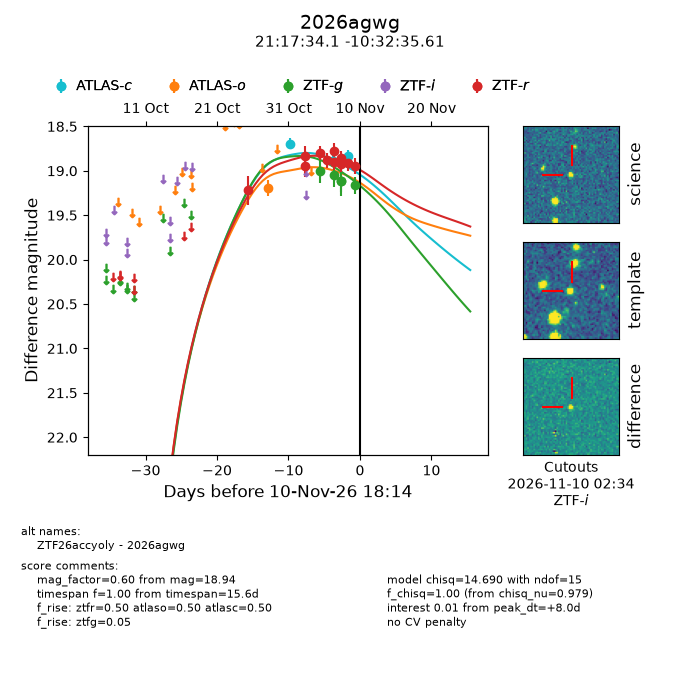
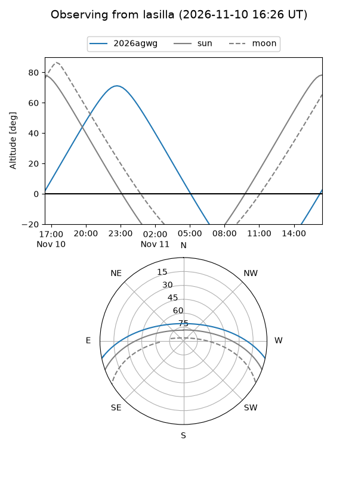
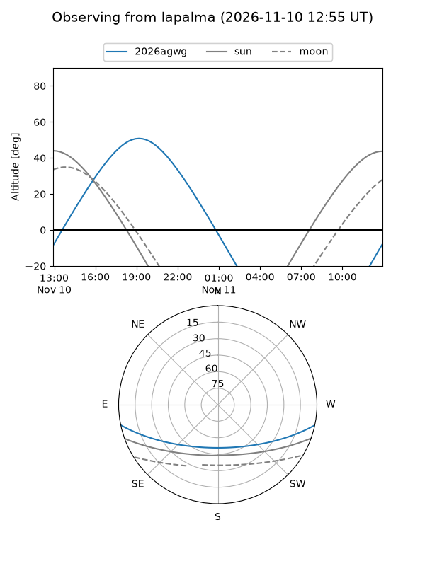
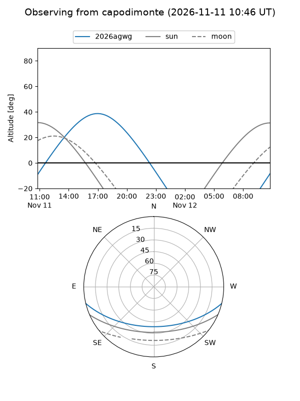
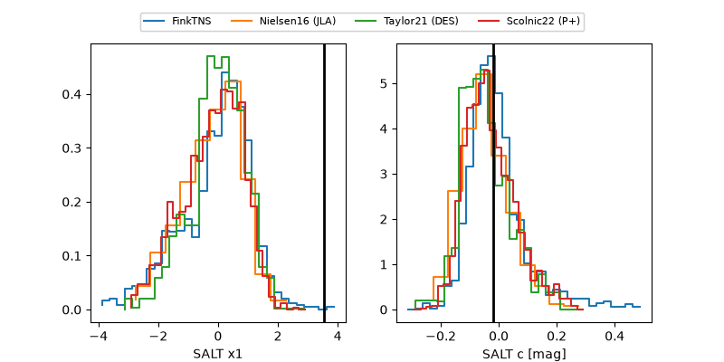

2026agwg
Target 2026agwg at 2026-11-11 06:17
Aliases and brokers:
FINK-ZTF: ztf.fink-portal.org/ZTF26accyoly
Lasair-ZTF: lasair-ztf.lsst.ac.uk/objects/ZTF26accyoly
ALeRCE-ZTF: alerce.online/object/ZTF26accyoly
YSE-PZ: ziggy.ucolick.org/yse/transient_detail/2026agwg
TNS name: wis-tns.org/object/2026agwg
Direct TNS query: direct search
alt names
ZTF26accyoly (ztf,fink_ztf)
2026agwg (tns,yse)
Coordinates:
equatorial (ra, dec) = 319.3920,-10.54323
equatorial (HMS+DMS) = 21:17:34.09,-10:32:35.61
galactic (l, b) = (40.4325,-37.17719)
Flags:
peak dt: +8.5
Photometry:
last atlasc=18.83, atlaso=19.19, ztfg=19.16, ztfr=18.94
3 atlasc, 1 atlaso, 5 ztfg, 11 ztfr detections
Lightcurve

Visibility



Additional plots
